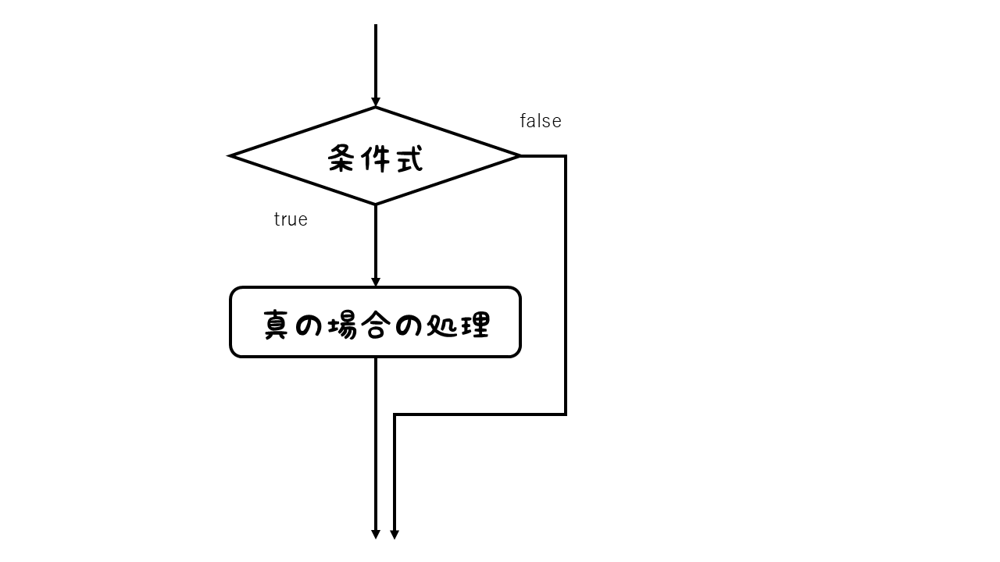
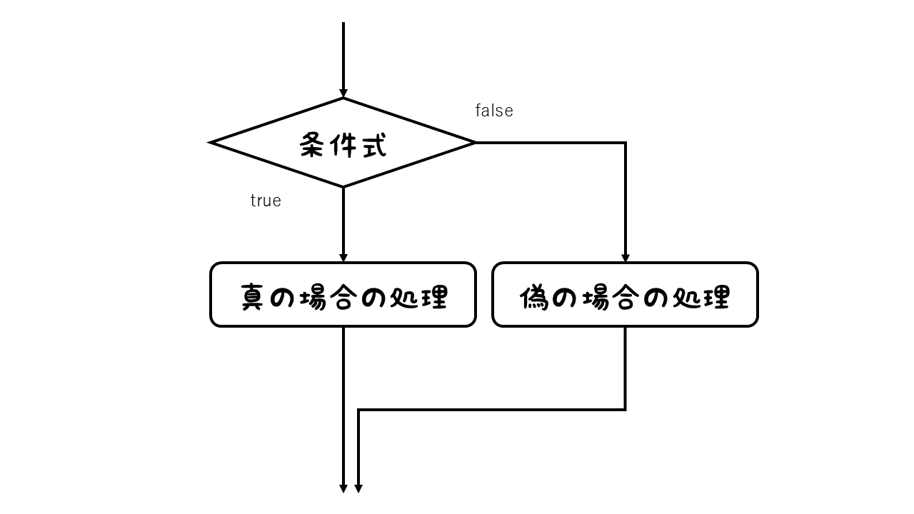
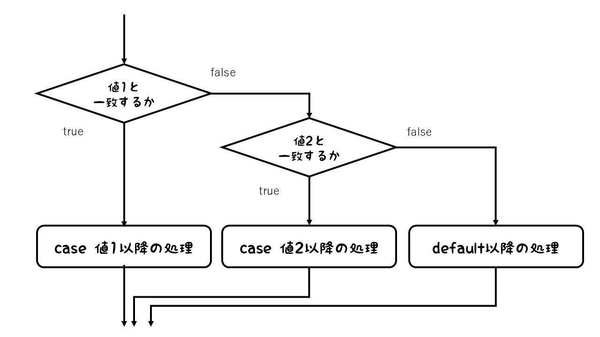

この章では、Javaでの条件分岐について学びます。条件分岐とは、条件の真偽に応じて実行される処理を分けることです。今までは記述した順に処理が実行されていましたが、条件分岐を使うことで、条件に応じて異なる処理を実行できます。
Javaには、以下のような条件分岐の構文があります。
以下では、各条件分岐の構文と使用方法について詳しく説明します。
if文は、条件が真のときだけ処理を実行する構文です。
if (条件) {
// 条件が真のときの処理
}if文では、条件が真のときだけ中括弧内の処理が実行されます。なお、真の場合の処理が1文の場合は中括弧を省略できます。
フローチャートで表すと、次のようになります。

if文は、条件が真のときだけ処理を実行するため、条件が偽のときは何も処理されません。条件が偽のときに別の処理を実行したい場合は、else文を使用します。
if (条件) {
// 条件が真のときの処理
} else {
// 条件が偽のときの処理
}if-else文をフローチャートで表すと、次のようになります。

さらに、複数の条件を順番に評価したい場合は、else if文を使用します。
if (条件1) {
// 条件1が真のときの処理
} else if (条件2) {
// 条件2が真のときの処理
} else {
// 条件1も条件2も偽のときの処理
}if-else if-else文をフローチャートで表すと、次のようになります。

if文は必ず記載する必要があり、省略できません。else文やelse if文は必要に応じて記載しますが、省略することもできます。elseは1つまで記載できますが、else ifは複数記載することができます。
switch文は、変数の値に応じて複数の処理を分岐させる構文です。
switch (変数) {
case 値1:
// 値1のときの処理
break;
case 値2:
// 値2のときの処理
break;
default:
// どの条件にも該当しないときの処理
}switch文をフローチャートで表すと、次のようになります。

switch文では、変数の値がcaseの値と一致する場合、そのcaseの処理が実行されます。処理が実行された後、break文がある場合はswitch文を抜けます。break文がない場合は、次のcaseの処理も実行されます。どのcaseにも該当しない場合は、defaultの処理が実行されます。
defaultは必ず末尾に書く必要はありません。
switch文は、変数の値が特定の値に一致する場合に処理を分岐させるため、複数の条件を評価する場合に便利です。ただし、switch文の変数に使用できる型は、以下に限られます。
また、caseの値は変数ではなく、定数でなければなりません。変数を使用している場合はコンパイルエラーになります。
Java Silver用学習ノートへ戻る